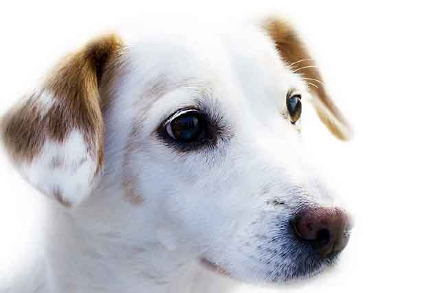
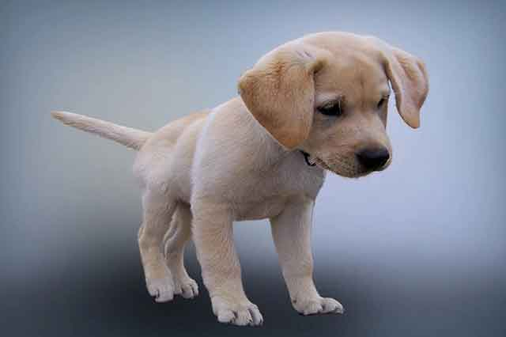
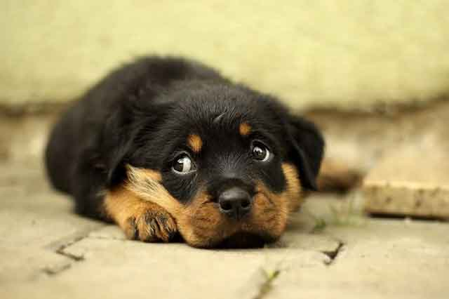

강아지가 딸꾹질을 하는 이유! 대처법까지 알아보자!
'딸꾹!' 사람도 어느 순간이면 자신의 의지와 상관없이 딸꾹질할 때가 있습니다. 딸꾹질은 가슴, 복부 그사이를 나누는 횡격막의 근육이 수축할 때 나는 소리인데요. 횡격막이 제대로 발달하지 않은 어린 강아지의 경우 또는 성견의 경우 특정한 자극에 딸꾹질하게 됩니다.
"성장기 강아지, 딸꾹질은 자연스러운 현상"
강아지도 딸꾹질한다는 사실이 조금 의아하겠지만, 어린 강아지는 딸꾹질을 자주 하는 편입니다. 횡격막과 그 주변 신경이 제대로 발달하지 않아 자연스러운 증상이기 때문입니다. 게다가 주변 환경이 익숙하지 않은 어린 강아지에게는 낯선 환경이 주는 민감한 반응이기도 하겠죠.
어릴 때 잦은 증상은 성견이 되면서 자연스럽게 사라집니다. 그리고 생후 4개월이 되면 점잖은 강아지 모습을 갖게 되는 것이죠. 그렇다고 4개월 이후에 딸꾹질하는 것이 잘못된 것은 아니기 때문에 매우 놀랄 필요는 없습니다. 자연스러운 현상 중 하나라고 받아들이면 됩니다.
"성견이 된 강아지, 잦은 딸꾹질로 불편함을 느낀다면?"
횡격막의 성장이 끝난 강아지! 더는 딸꾹질은 하지 않을 것처럼 보이지만, 의외로 성견이 되어서도 계속된 딸꾹질에 반려인의 마음을 애끓게 할 수 있는데요.
성견이 됐는데도 딸꾹질이 잦거나 또는 멈추지 않고 장시간 이어진다면 건강 상태를 확인해 볼 필요가 있습니다!
원인을 찾기 위해서는 면밀하게 상태를 살펴 기록해 두는 것이 도움이 됩니다. 언제부터 딸꾹질을 시작했고, 얼마 동안 지속하였는지 또 기존에 병력이 있었는지를 정리해서 검사를 받아보는 것이 좋습니다.
"강아지 딸꾹질 멈추는 방법!"
딸꾹질은 사람과 마찬가지로 계속되기보다는 잠시 잠깐 나타났다 사라지는 증상으로 딸꾹질을 유효하게 없앨 방법은 아직 밝혀진 바는 없습니다. 하지만, 많은 사람이 사용하던 몇 가지 방법을 활용해 보는 것으로 도움이 될 수는 있습니다.
강아지 배가 보이게 눕히고 횡격막의 균형을 맞추기 위해서 좌우로 살살 움직여 주는 것입니다. 갑작스럽게 놀랐거나 또는 횡격막의 근육 수축을 자연스럽게 풀어주는 것이죠.
또 하나는 음식을 주는 것입니다. 음식을 섭취하면서 호흡의 방식을 바꾸고, 불규칙했던 호흡을 바로잡게 만드는 것이죠. 사람들이 물을 마시는 것과 같은 이치라고 생각하면 좋습니다.
딸꾹질이 마냥 나쁜 것만은 아닙니다. 소화 문제를 겪고 있는 강아지에겐 다시 정상인 상태로 돌아오도록 만드는 방법이 되기도 하죠. 게다가 횡격막 주변 신경의 조정력 손실을 바로 잡아주기도 합니다. 다만, 장기간 이어지거나 문제가 있어 보인다면 반드시 병원에서 검사를 받아 볼 것을 권장합니다! 의외로 다른 질병이 반려견을 괴롭히고 있을지도 모르니까요.
[출처] 강아지가 딸꾹질을 하는 이유! 대처법까지 알아보자! ｜ 작성자 꽁치마루